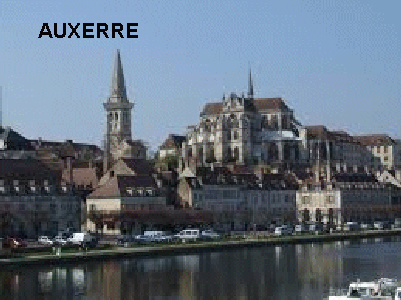
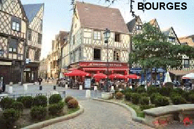
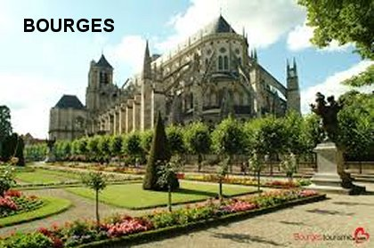
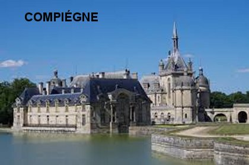
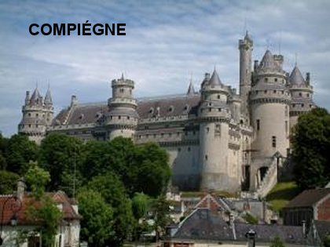
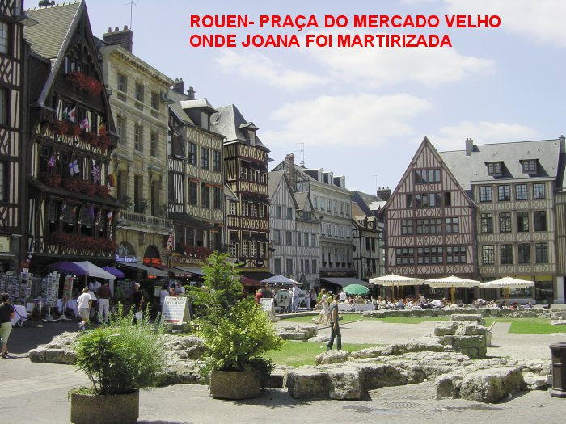
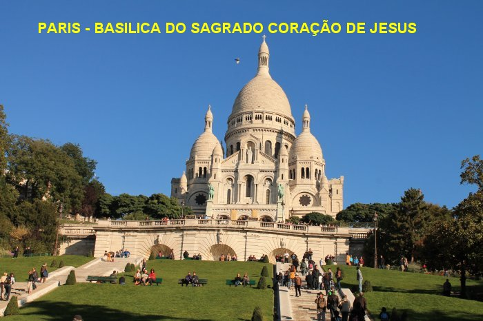
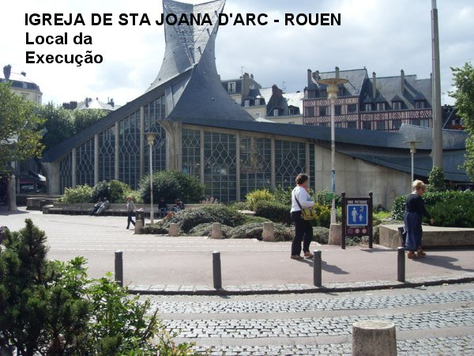
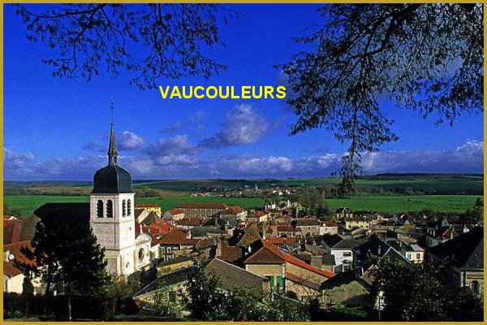
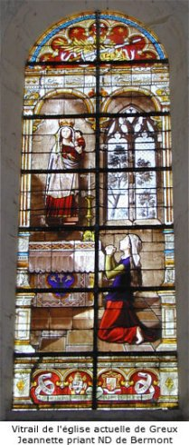

FOTOGRAFIAS










CONVITE
Este Site foi constru�do pelo Apostolado dos Sagrados Cora��es Clique aqui ou no endere�o abaixo para visitar o nosso PORTAL. Nele encontrar� uma apreci�vel quantidade de Sites sobre o CRIADOR, o ESP�RITO SANTO, JESUS DE NAZAR�, sobre NOSSA SENHORA, os SANTOS ANJOS e Sites que apresentam a Vida e Obra de diversos SANTOS. Todos eles elaborados com muita dedica��o, sobretudo com a inten��o maior de somente informar a Verdade.
http://www.apostoladosagradoscoracoes.com/
Desejando comunicar-se conosco, por favor utilize o E-mail abaixo:

FIRMAS DE BUSCAS